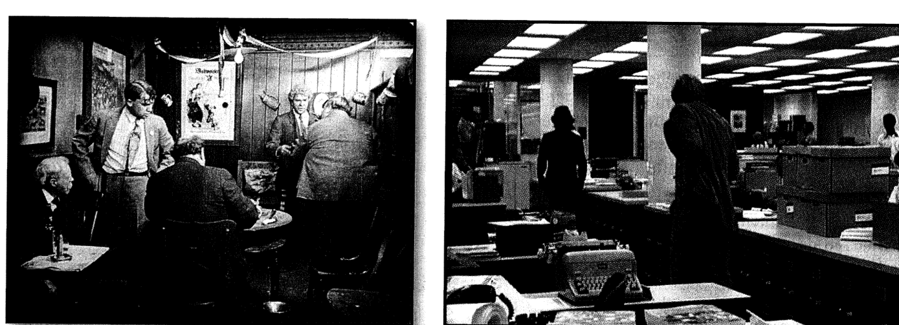
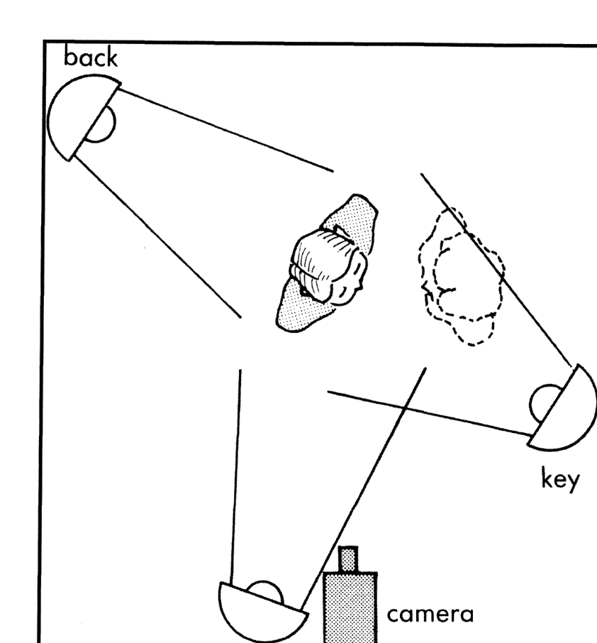
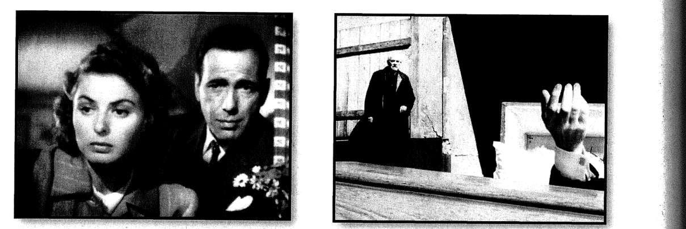
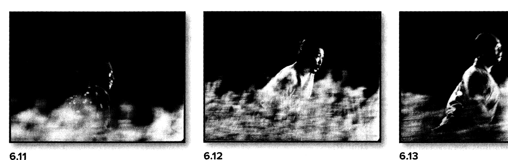
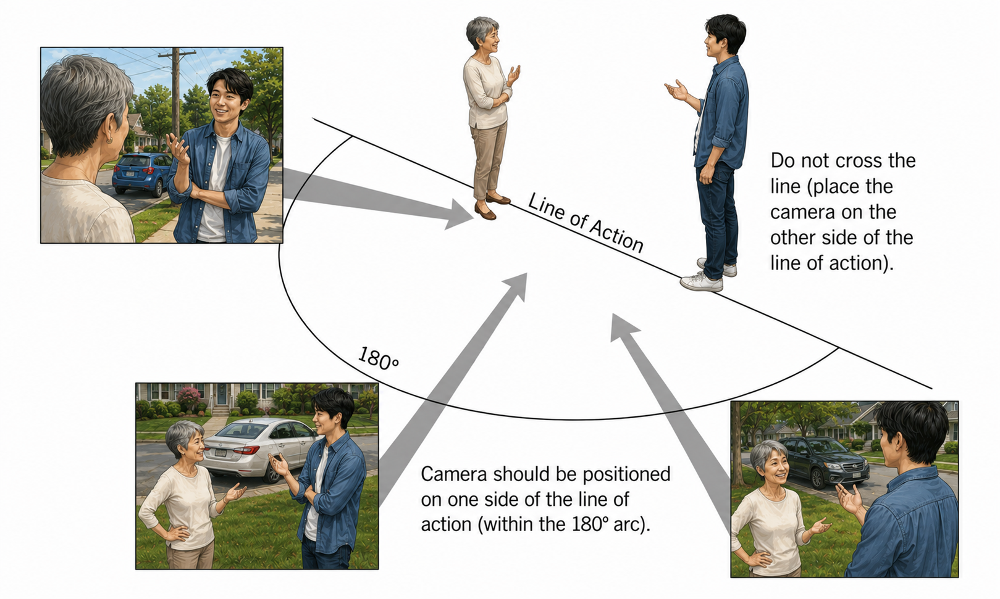
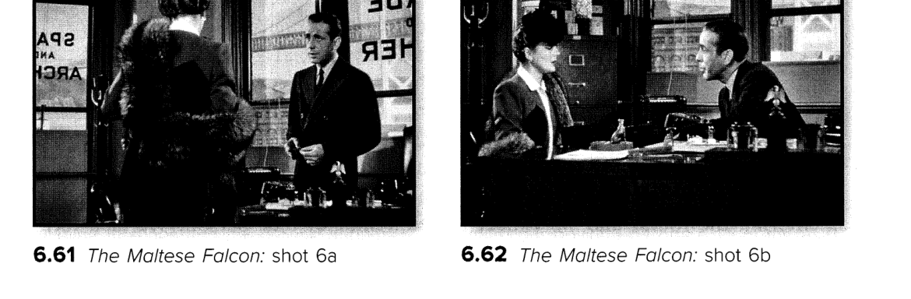

When you like a movie, you just like it. But when we discuss films in a college course, we need structure — critical methods for thinking about them.
Bordwell & Thompson call these the techniques of the medium: mise-en-scène, cinematography, editing, and sound — the concrete choices through which a film shapes meaning and feeling (FA, chs. 4–7).
Bordwell: mise-en-scène (French, “putting into the scene”) names the director’s control over what appears in the frame — grouped into these four areas (FA, p. 114).

Authenticity in constructed settings: posters and flypaper build a tavern in Greed (left); for All the President’s Men, even wastepaper from the real newsroom was scattered on the set (right) (FA figs. 4.10–4.11).

The basic three-point setup: key (front-diagonal), fill (near the camera), and backlight (behind and above) (FA fig. 4.70).

Tonal contrast: balanced grays in Casablanca (left) vs. near-white, high-contrast dream imagery in Bergman’s Wild Strawberries (right) (FA figs. 5.1–5.2).
Bordwell organizes all editing along exactly these four dimensions (FA, p. 219).

Dynamic graphic match: Kurosawa cuts six brief, graphically matched shots of running samurai in Seven Samurai (FA figs. 6.11–6.13).


Shot/reverse shot across the 180° line in The Maltese Falcon (FA figs. 6.61–6.62). We will see Ozu deliberately break this system.
Roughly, narrative is how a story is told — in the film, on the screen, and in the sound track. One story can have different narratives; how a filmmaker presents a story is one cinematic narrative, not the story itself. Plot usually refers to the ordering of events.
I take ‘narrative’ in cinema to include anything on the screen that does not directly form events within the story — unrelated images, colors, light or darkness, sounds. If even unrelated elements carry the narrative forward, the cinematic narrative continues to intrigue the audience.
Bordwell distinguishes story (all events in order) from plot (everything actually present in the film we watch), and calls the delivery of story information narration — which may be restricted to a character’s knowledge or freely omniscient, as in Citizen Kane. He also separates diegetic (story-world) from nondiegetic material (FA, ch. 3).
Textbook figures © their respective rights holders, reproduced for classroom discussion. JPN/FST 266, Miami University.